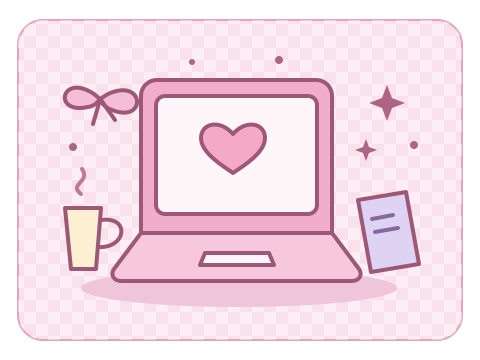

01 · WEB EXPERIENCE
Cotton Candy Photobooth
A candy colored camera playground with stickers, effects, and frames.
Open Photobooth ↗DEVELOPER · DESIGNER · CREATIVE LEAD
I make playful websites, 2d/3d games, and graphic designs. Welcome to my little corner ݁ ˖Ი𐑼⋆

I’m glad you stopped by. Make yourself at home! ♡
01 · THE ABOUT ALBUM
I’m Alysa Julien Guevarra, a 4th year BSIT student at STI College Calamba. I love to make cute and creative things, turning them into a web or app. ₍^. .^₎⟆ Pick a page from my album.
I build interactive websites, games with C# and Python, and Discord apps.
I work on UI/UX, publication graphics, and photography. I like making digital spaces feel personal.
I’ve led development teams and helped student organizations plan events, coordinate projects, and tell their stories.
02 · THE PROJECT SHELF
ദ്ദി˙∇˙)ว Check out some of my projects.
01 · WEB EXPERIENCE
A candy colored camera playground with stickers, effects, and frames.
Open Photobooth ↗02 · INTERACTIVE STORY
An interactive project that brings code and storytelling together.
Open story project ↗03 · GAME PROJECT
I worked on UI/UX, systems planning, marketing, and team leadership.
Play on itch.io ↗04 · DISCORD APP
A Discord assistant with useful tools and a little personality.
View Yachiyo ↗05 · VISUAL WORK
Publication graphics, social content, and commissioned work.
Browse the gallery ↗03 · THE SUPPLY DRAWERS
Open a drawer to see what I work with.
04 · THE MEMORY BOOK
Unfold a memory to see what I did there.
Led the development team and worked as lead developer and graphic designer.
Helped create event materials as part of the graphics team.
Served as Vice President and Editor, then Secretary.
Served as first and second year representative and made publication and event graphics.
Worked as Photographer and Treasurer.
05 · THE MAILBOX
@sereiatalia_
Founder of Ajinomoto · I make Discord apps.